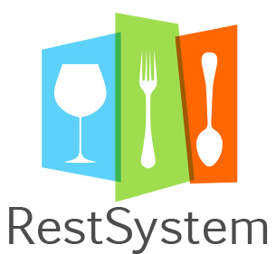
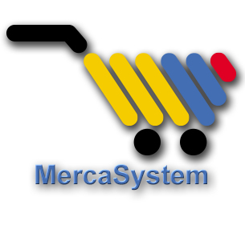
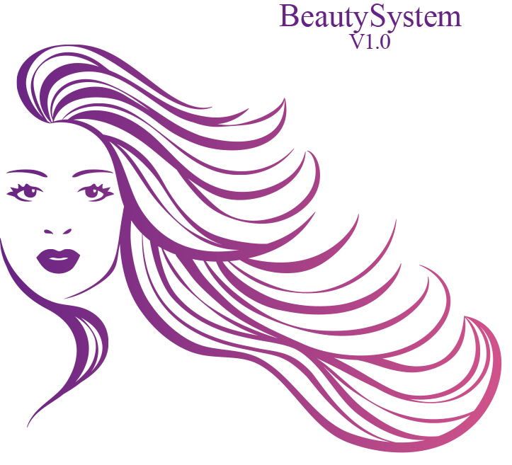

Quienes Somos
Analisis, Diseño y Desarrollo del Producto Todos nuestros productos han sido desarrollados a partir de las experiencias de los clientes con la vida cotidiana, y con otros sistemas exitosos del mercado. Las herramientas han sido desarrolladas con los últimos estándares de la industria desarrolladora de software y con productos estándares como son PHP, MySQL, HTML5, CSS, jQuery y otros mas, que hacen que los sistemas sean compatibles con la gran mayoría de dispositivos web del mercado.
Equipo de Trabajo Nuestro equipo de desarrollo, es un equipo maduro, que cuenta con profesionales idóneos para la elaboración de un producto de software excelente. Nuestros desarrollos pasan por las más rigurosas pruebas desde su analisis, hasta su desarrollo y entrega final, haciendo que el sistema tenga un comportamiento con el cliente sin problemas y errores de desarollo.
Desarrollos a la Medida Gracias a nuestro equipo de profesionales, podemos crear para usted, su sistema de acuerdo a las necesidades que requiera. Estos desarrollos se realizan bajo PHP, MySQL y HTML5 Scriptcase, haciendo que los tiempos de entrega sean cortos,
Por que adquirir productos con nosotros
Nuestra empresa cuenta con 3 sistemas desarrollados para comercialización publica!!, Usted podrá probarlos antes de su compra!!. También desarrollamos su sistema. Ubíquese sobre cada imagen para conocer mas...
Pruebe en Linea Pruebe en linea por 5 días, tiempo en el cual podrá familiarizarce con las opciones del producto y tiempo en el cual podrá tomar la decisión de adquirir la membresia mensual con nosotros.
Tiempo de Prueba Gratis Usted podrá probar el software en su equipo por un periodo de 5 días, tiempo suficiente para probar las bondades y servicios de nuestros sistemas. Pruébelo con sus diferentes dispositivos y tome su mejor decisión.
Compre su Licencia Una vez este seguro de los servicios ofrecidos por el sistema, compre la membresia mensual(30 dias), la cual permitirá que usted use el sistema sin restricciones. Recuerde que los precios pueden variar sin previo aviso. Los avances realizados durante el periodo de
Nuestros Productos
RestSystem
RestSystem es la solución ideal para el manejo operativo su restaurante. Características: *Abrir – Cerrar Caja *Creación y manejo de Mesas(Libre, Ocupada, Pendiente) *Toma del pedido, con imágenes y subdividido por tipo de productos *Despacho cocina y bar *Pago efectivo y electrónico *Inventarios(Por cantidad y por subproductos). *Creación de Combos. *Manejo de IVA *Menejo de Impuesto al consumo IPOCOM *Generación de Ticket o factura *Consulta Ventas en rango de fechas *Consulta Productos con mayor rotación *Ganancias *Manejo de Numeración DIAN *Gráficos *Propinas *Gastos *Sistema multiusuarios, con manejo de Roles. *Sistema web con base de datos MySQL *Soporte Técnico por errores del sistema. No errores de usuario *Puedes conectar todas tus tablets y computadores sin instalaciones y solo pagas una membresia por empresa. *Pagas y Disfrutas. Producto 100% legal. Sistema desarrollado completamente en versión web, con lo cual usted podrá estar al tanto de su producción, desde cualquier dispositivo móvil conectado a Internet.
MercaSystem
MercaSystem es la solución ideal para el manejo operativo su negocio. Características: *Abrir – Cerrar Caja *Creación productos por unidad o a granel *Manejo de Iva *Registro de ventas, por medio de código de barras o por descripción *Manejo de inventario para productos unitarios *Pago efectivo y electrónico *Generación de Ticket o factura *Consulta Ventas en rango de fechas *Consulta Productos con mayor rotación *Gráficos (Pasteles, Barras, etc) *Gastos *Sistema multiusuarios, con manejo de Roles. *Sistema web con base de datos MySQL *Soporte Técnico por errores del sistema. No errores de usuario *Puedes conectar todas tus tablets y computadores sin instalaciones y solo pagas una membresia por empresa. *Pagas y Disfrutas. Producto 100% legal. Sistema desarrollado completamente en versión web, con lo cual usted podrá estar al tanto de su producción, desde cualquier dispositivo móvil conectado a Internet.
BeautySystem
BeautySystem es la solución ideal para el manejo operativo su salón de belleza o peluquería. Características: *Abrir – Cerrar Caja *Creación y manejo de Puestos de Trabajo(Libre, Ocupada) *Toma del servicio, con imágenes y subdividido por tipo de productos *Citas *Pago efectivo y electrónico *Inventarios. *Manejo de IVA *Generación de Ticket o factura *Consulta Ventas en rango de fechas *Consulta Productos con mayor rotación *Ganancias *Manejo de Numeración DIAN *Gráficos *Inventarios *Gastos *Comisiones por ventas y servicios para los estilistas *Sistema multiusuarios, con manejo de Roles. *Sistema web con base de datos MySQL *Soporte Técnico por errores del sistema. No errores de usuario *Puedes conectar todas tus tablets y computadores sin instalaciones y solo pagas una membresia por empresa. *Pagas y Disfrutas. Producto 100% legal. Sistema desarrollado completamente en versión web, con lo cual usted podrá estar al tanto de su producción, desde cualquier dispositivo móvil conectado a Internet.